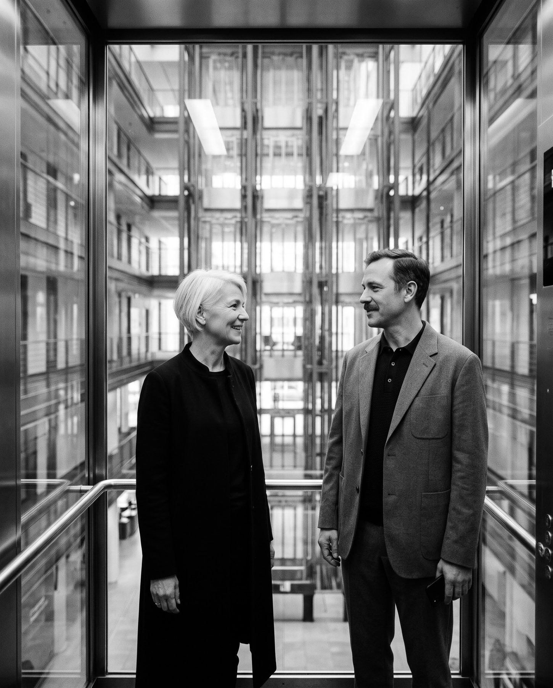

Proposta · Novembro 2026
Velora×Talent Four
Desenvolvimento desistema de aquisição.
Uma proposta para ampliar a abertura de contas estratégicas na Talent Four, conectando inteligência de mercado, marketing e abordagem comercial.
InteligênciaRelacionamentoDemandaConversãoAprendizado
Roteiro
O que vamos percorrer.
Quatro partes: quem somos, o que entendemos da Talent, a proposta em três fases e os próximos passos.
- 01A Velora
- 02A Talent Four
- 03A proposta
- Fase 1 · DiagnósticoMês 1
- Fase 2 · Preparação e implementaçãoMês 2
- Fase 3 · Operação e ajustesMeses 3 a 6
- 04Investimento e projeções
Parte 01/de 04
01
A Velora
Como contribuímos · Contexto de mercado · Forma de trabalhar · Princípios
01/Como contribuímos
Crescimento consistente exigeum caminho claro até cada conta.
Conectamos inteligência de mercado, marketing e vendas para definir onde atuar, como se aproximar das contas certas e o que acompanhar em cada etapa.
InteligênciaAcessoDemandaConversãoMedição
01/Contexto de mercado
Quando uma conversa comercial começa, parte da decisão já pode ter sido tomada.
~80%
Das compras B2B analisadas, o fornecedor escolhido já era o preferido antes do primeiro contato com vendas.
6sense · Buyer Experience Research, 2025
5–16
Profissionais podem participar de decisões de compra B2B mais complexas.
Gartner · Sales Survey, 2025
49%
Dos líderes de vendas relatam diferenças importantes entre marketing e comercial na definição de um lead qualificado.
Gartner · CSO Survey, 2025
01/Forma de trabalhar
Cinco etapas conectam a escolha das contas à evolução das oportunidades.
Cada ciclo parte do que aprendemos no anterior
01
Inteligência
Identificar segmentos, empresas e oportunidades com maior potencial.
02
Acesso
Mapear os decisores e encontrar caminhos para iniciar boas conversas.
03
Demanda
Fortalecer a presença da marca e despertar interesse ao longo da jornada de compra.
04
Conversão
Apoiar o avanço das conversas, da primeira reunião à contratação.
05
Medição
Entender o que avança, o que precisa mudar e onde vale investir mais.
Não é preciso mudar tudo de uma vez. Começamos pelas oportunidades de maior impacto.
01/Princípios
Quatro princípios orientam nosso trabalho.
01
O relacionamento é um ponto de partida
A experiência e as conexões existentes ganham alcance com novas formas de identificar oportunidades.
02
Marketing e vendas seguem a mesma direção
Contas prioritárias, mensagens e indicadores definidos em conjunto.
03
Primeiro aprender, depois ampliar
Ciclos curtos para testar abordagens, entender os resultados e ajustar prioridades.
04
O conhecimento fica com a Talent
Bases, processos, materiais e aprendizados passam a fazer parte da operação.
Parte 02/de 04
02
A Talent Four
1992
Início da operação
~350
Consultores alocados
5 + 1
Gerentes de conta e hunter
02/O que ouvimos
O que ouvimos da Talent.
Onde a Talent está
- Crescimento construído por relacionamento e indicação desde 1992, com ~350 consultores alocados.
- Carteira concentrada: [X]% da receita em [N] contas.
- Novas contas chegam sobretudo quando alguém conhecido muda de empresa, num ritmo que a Talent não controla.
- Um hunter recém-contratado, que precisa de contas, contexto e mensagem para render rápido.
Onde a Talent quer chegar
- [N] contas novas por ano em setores como bancos, seguros e saúde.
- Ser homologada antes da demanda aparecer, não depois.
- Ofertas de entrada que abram portas em grandes contas, como squads de QA e perfis escassos.
- Previsibilidade: saber quanto custa abrir uma conta e onde investir.
O custo de não mudar
Cada conta grande que homologa um concorrente antes da Talent fica fechada por anos. Com 6 posições, uma conta representa cerca de R$ 1,4 mi por ano de faturamento.
02/Como a Talent cresceu
O relacionamento abre portas.
A capacidade de entrega transforma acesso em contratos.
01
Relacionamento
Profissionais que já conhecem a Talent levam essa referência a novas empresas.
02
Indicação
A área de TI apresenta a Talent ao processo de compras.
03
Homologação
Cadastro, documentação e definição de condições por perfil.
04
Concorrência
A empresa convida fornecedores homologados a atender às demandas.
05
Alocação
A capacidade de encontrar o perfil adequado com agilidade faz diferença.
É um caminho valioso, construído ao longo dos anos. A oportunidade é complementá-lo com novas fontes de acesso a contas estratégicas.
02/Oportunidades
Vemos três oportunidades para ampliar a presença em grandes contas.
01
Acesso
Chegar aos profissionais de TI e compras que participam da escolha de novos fornecedores.
02
Aproximação
Construir conversas relevantes e entender o caminho até a homologação.
03
Presença
Ampliar o conhecimento sobre a Talent e seu portfólio antes de uma demanda formal.
02/Daqui em diante
O relacionamento trouxe a Talent até aqui.Nossa proposta é ampliar esse alcance com novas formas de abrir contas.
Parte 03/de 04
03
A proposta
Visão do projeto · Fase 1 Diagnóstico · Fase 2 Preparação · Fase 3 Operação · Time
03/Visão do projeto
Seis meses para construir, colocar em prática e avaliar um novo modelo de aquisição.
Mês 1
Mês 2
Mês 3
Mês 4
Mês 5
Mês 6
Meses 12 a 18
Expectativa
Grandes contas costumam exigir maturação. O primeiro semestre cria as condições para aprender, abrir oportunidades e construir referências de custo; o desenvolvimento das contas pode se estender por 12 a 18 meses. As projeções de retorno da parte 04 seguem essa rampa.
Fase 1 · Mês 1
Diagnóstico
Em 3 a 4 semanas, entender a carteira, a atuação comercial, o marketing e as oportunidades de mercado.
Fase 2 · Mês 2
Preparação e implementação
Definir a estratégia de entrada no mercado, classificar cerca de 500 contas e preparar as frentes de atuação.
Fase 3 · Meses 3 a 6
Operação e ajustes
Executar as frentes, gerar conversas com decisores, acompanhar homologações e evoluir a abordagem a partir dos dados.
Desenvolvimento das contas
Fase 1/de 3
01
Diagnóstico
Mês 1 · 3 a 4 semanas
Entender a operação e identificar onde atuar primeiro.
- Mês 1
- Mês 2
- Mês 3
- Mês 4
- Mês 5
- Mês 6
Fase 1/Diagnóstico
Começamos entendendo a operação e identificando onde atuar primeiro.
01
Carteira
Analisar concentração, perfil das contas e oportunidades de expansão.
02
Comercial
Mapear o fluxo comercial, o CRM e os indicadores para dar ao hunter e aos gerentes mais contas, mais contexto e menos trabalho manual.
03
Marketing
Avaliar site, conteúdo e presença nos canais em que os clientes pesquisam fornecedores.
04
Mercado
Definir o perfil de cliente ideal e dimensionar as contas com maior potencial.
Entregável
Plano priorizado
Melhorias de curto prazo, ações para as semanas seguintes e iniciativas estruturantes.
Fase 1/O que o diagnóstico responde
Ao final do diagnóstico, teremos respostas claras para cinco perguntas.
Pergunta
O que a Talent recebe
01
Onde está o potencial da carteira?
Curva ABC de receita e margem, nível de concentração e contas com espaço para expansão.
02
Quais empresas priorizar fora da carteira?
Perfil de cliente ideal validado e universo de contas dimensionado.
03
Quem decide e como chegar até essas pessoas?
Mapa do comitê de compra por tipo de conta: demanda, homologação e influência.
04
O que trava hoje, do contato à alocação?
Leitura do processo comercial, do CRM, do marketing e dos indicadores atuais.
05
Onde investir primeiro?
Prioridades, metas de referência e responsáveis para os meses seguintes.
Fase 1/Plano de ação
O plano de ação faz a passagem do diagnóstico para o setup.
O diagnóstico entrega
Validação · semana 4
O setup começa com
ICP validado e contas dimensionadas
Classificação das ~500 contas em Tier 1, 2 e 3
Mapa do comitê de compra
Mensagens e ofertas de entrada por papel
Leitura do processo e do CRM
Etapas, critérios e prazos de passagem
Diagnóstico de marketing e do site
Briefing da página de conversão e do conteúdo
Prioridades e metas de referência
Plano dos quatro meses de operação
Na semana 4, o plano é apresentado e validado com a liderança da Talent. Ele organiza as ações em três horizontes: melhorias de curto prazo, ações para as semanas seguintes e iniciativas estruturantes.
Fase 2/de 3
02
Preparação e implementação
Mês 2
Definir a estratégia de entrada no mercado, classificar cerca de 500 contas e preparar as frentes de atuação.
- Mês 1
- Mês 2
- Mês 3
- Mês 4
- Mês 5
- Mês 6
Fase 2/Preparação do mercado
Definimos juntos quais empresas priorizar, com quem conversar e como gerar interesse.
01
Onde concentrar esforçosPerfil de empresa (ICP)
Porte da operação de TI e uso de terceiros; setores como bancos, seguros, saúde, farma, varejo e energia; região e modelo de contratação; lista de contas desejadas pela Talent.
02
Quem participa da decisãoPessoas envolvidas
- Demanda
- CIOs, CTOs e lideranças de desenvolvimento, dados e qualidade.
- Homologação
- Compras e suprimentos.
- Influência
- PMOs, líderes de squad e contatos com histórico de relacionamento.
03
Como iniciar a conversaMensagens e ofertas
Mensagens por setor e perfil; ofertas de entrada, como squads de testes e alocação de perfis escassos; evidências de experiência e capacidade de atendimento. Ofertas desenhadas em conjunto com [Nome], de produto e comercial.
Fase 2/Classificação de contas
~500
contas priorizadas com o time da Talent, de acordo com seu potencial e a abordagem necessária.
Ao final da preparação, definimos juntos as frentes e contas que terão prioridade nos quatro meses seguintes.
Tier 1 · ~50
Contas estratégicas
Maior potencial de relacionamento e expansão. Abordagem individual, com apoio da diretoria e dos gerentes de conta.
Tier 2 · ~150
Contas prioritárias
Oportunidades relevantes para abordagens personalizadas por segmento.
Tier 3 · ~300
Desenvolvimento de mercado
Cadências escaláveis de prospecção, apoiadas por conteúdo e segmentação.
Fase 2/Frentes de aquisição
Três frentes complementares para gerar oportunidades e acompanhar sua evolução.
01
ABM e radar de sinais
Identificar o contexto e o melhor momento para abordar contas prioritárias.
02
Geração de demanda
Ampliar a presença da Talent e facilitar a chegada de novas oportunidades.
03
Prospecção de decisores
Mapear pessoas relevantes e iniciar conversas com abordagens adequadas a cada conta.
Destino comum
Novas oportunidades
- Conversa qualificada
- Homologação
- Primeira alocação
Base compartilhada
Critérios comerciais, responsabilidades, CRM e indicadores combinados entre os times.
Fase 2/Frente 1 · Radar de sinais
Sinais de mercado ajudam a identificar quando vale iniciar uma conversa.
Velora Radar
Monitoramento de informações públicas e fontes de dados, com apoio de IA, para acompanhar as contas Tier 1 e Tier 2. A proposta é reunir indícios de mudança, oportunidade ou necessidade e dar contexto à abordagem do hunter e dos gerentes.
| Sinal | O que pode indicar |
|---|---|
| Aumento de vagas de TI | Expansão de equipe ou necessidade de capacidade adicional. |
| Chegada de um novo CIO ou CTO | Momento favorável para apresentar novas alternativas. |
| Contato conhecido em outra empresa | Possibilidade de reabrir uma relação de confiança. |
| Novo projeto, aquisição ou expansão | Potencial demanda por profissionais ou squads. |
| Mudança na política de trabalho presencial | Alterações na disponibilidade e na composição das equipes. |
Saída esperada
Um alerta com contexto, pessoas relevantes e sugestão de próximo passo.
Fase 2/Frente 2 · Geração de demanda
Estar presente quando existe uma necessidade — e ser lembrada antes dela surgir.
Captar
oportunidades em busca de solução.
- Google Ads para buscas por alocação de TI, squads e serviços de QA.
- Presença nas pesquisas pela marca Talent Four.
- Página de conversão com ofertas e caminho claro para contato.
Construir
presença e consideração.
- Conteúdo segmentado no LinkedIn para as contas Tier 1 e Tier 2.
- Ferramenta de comparação: alocar profissionais ou contratar via CLT.
- Guias, estudos e materiais úteis sobre contratação e terceirização de TI.
Trabalho conjunto: Talent, agência atual e Velora alinham temas, entregas e indicadores para que marketing e comercial avancem na mesma direção.
Fase 2/Frente 3 · Prospecção de decisores
Abordagens relevantes começam com uma boa leitura da conta.
01
Mapear
Identificar quem participa da demanda, da influência e da homologação em cada empresa.
02
Personalizar
Preparar contatos por e-mail, LinkedIn e, nas contas prioritárias, ligação, considerando o perfil de cada decisor.
03
Contextualizar
Usar sinais de mercado e conteúdos relevantes para escolher o momento e a mensagem.
04
Conectar ao comercial
Encaminhar as conversas qualificadas ao hunter ou gerente de conta, com contexto e próximos passos.
Infraestrutura: domínios dedicados, configuração técnica de envios e acompanhamento da entregabilidade.
Fase 2/Abordagem por grupo
A intensidade da abordagem acompanha o potencial de cada conta.
| Grupo | Como nos aproximamos | Canais prioritários | Quem participa |
|---|---|---|---|
| Tier 1 | Relacionamento individual e abordagem executiva | LinkedIn, telefone e encontros | Diretoria e gerentes de conta |
| Tier 2 | Conversas personalizadas por segmento | E-mail e LinkedIn | Hunter |
| Tier 3 | Prospecção em escala, com segmentação e conteúdo | E-mail, LinkedIn e mídia | Operação de prospecção e hunter |
Roteiros
Mensagens de abertura, descoberta, acompanhamento e evolução até a homologação.
Responsabilidades
Definição conjunta de quem inicia a conversa, conduz a reunião e acompanha o processo de compras.
Fase 2/Indicadores
Critérios compartilhados ajudam a acompanhar cada oportunidade sem perder contexto.
01
Conta-alvo
Empresa alinhada ao perfil buscado e classificada por prioridade.
02
MQL
Contato com perfil aderente que demonstrou interesse ou engajamento.
03
SQL
Reunião qualificada com decisor e necessidade identificada.
04
Oportunidade
Demanda com perfil, quantidade e prazo definidos.
05
Homologação
Cadastro em compras e condições comerciais encaminhados.
06
Alocação
Primeiro profissional ou squad contratado e iniciado.
07
Conta estratégica
Conta que atingiu o volume de consultores definido em conjunto.
Prazos de referência · a combinar com a Talent
Contato com MQL em até 24 horas; passagem de SQL com resumo da conta; acompanhamento em até 48 horas; atualização semanal do CRM.
O que vamos medir
Volume e conversão por etapa, tempo de avanço e origem das oportunidades.
Fase 3/de 3
03
Operação e ajustes
Meses 3 a 6
Colocar as frentes em prática, aprender e ajustar a partir dos dados.
- Mês 1
- Mês 2
- Mês 3
- Mês 4
- Mês 5
- Mês 6
Fase 3/Página de conversão
Uma página que mostre com clareza por que conversar com a Talent.
Oportunidades de melhoria identificadas
- Dar mais destaque a experiências, resultados e depoimentos disponíveis.
- Apresentar serviços e soluções com mensagens mais específicas.
- Organizar conteúdos de apoio às decisões de contratação.
- Revisar páginas e informações ainda em desenvolvimento.
O que propomos para a nova página
- Provas de experiência, como clientes autorizados e indicadores verificáveis.
- Ofertas de entrada orientadas às necessidades de cada empresa.
- Comparativo entre alocação e contratação direta.
- Convite claro para conversar, com acompanhamento das conversões.
Fase 3/Mídia e conteúdo
Uma equipe de apoio para transformar a estratégia em campanhas e materiais.
01
Design
Peças, página de conversão e materiais de apoio, como guias e comparativos.
02
Mídia
Google para buscas por marca e alocação; LinkedIn para as contas Tier 1 e Tier 2.
03
Redação
Textos para anúncios, cadências, páginas e materiais por público.
04
Criativos
Adaptação das mensagens para peças estáticas, carrosséis e vídeos.
Investimento em mídia
Cerca de R$ 10 mil por mês nos quatro meses de operação, concentrado em Google e LinkedIn e pago diretamente pela Talent às plataformas e ajustado em conjunto na fase de preparação.
Fase 3/Projeção de referência
Um cenário inicial para orientar metas — e ajustar com dados reais.
| Frente | Base de referência | Hipótese inicial | Reuniões · meses 3 a 6 |
|---|---|---|---|
| Prospecção | 2.000 contatos trabalhados | ~2% de conversão em reunião | ~40 |
| ABM Tier 1 | ~50 contas | ~20% a 30% de conversão em reunião | ~10 a 15 |
| Geração de demanda | Google, página e conteúdo | A medir | Meta de ~10 |
| Total de referência | — | — | ~60 a 65 |
Possíveis desdobramentos do cenário
15–20
oportunidades até o mês 6
6–8
homologações iniciadas meses 5 a 9
4
contas com a primeira alocação meses 6 a 12
Homologação não garante requisição: supomos que metade das homologadas gere uma primeira alocação em até 12 meses. Estimativas preliminares, não compromissos de resultado. Prazos a validar com o ciclo de compras da Talent.
Fase 3/Aprendizado contínuo · Método RHOI
A cada ciclo, usamos os dados para decidir o que manter, melhorar ou mudar.
R
Review Revisar
Analisar os resultados das frentes e os avanços das oportunidades.
H
Hypothesis Formular hipóteses
Identificar o ajuste com maior potencial de impacto.
O
Operationalize Colocar em prática
Executar as mudanças com responsáveis e prazos definidos.
I
Inspection Avaliar
Verificar os efeitos e decidir o próximo ciclo.
Evolução esperada nos quatro meses de operação
Mês 1
Primeiros dados de resposta e conversão.
Mês 2
Mensagens, canais e prioridades ajustados.
Mês 3
Primeiras referências de custo e desempenho por etapa.
Mês 4
Leitura consolidada dos resultados e próximos testes.
Fase 3/O que fica com a Talent
Ao final, a Talent terá uma estrutura mais clara para continuar abrindo oportunidades.
O projeto reúne bases, rotinas, canais e indicadores para entender quais abordagens geram avanço comercial, quanto custa cada etapa e onde concentrar os próximos investimentos.
01
Base e radar
Contas classificadas e acompanhamento dos sinais mais relevantes.
02
Abordagens e roteiros
Mensagens, cadências e etapas de aproximação até a homologação.
03
Marketing e conteúdo
Página, campanhas e materiais implementados e avaliados.
04
Indicadores
CRM e painel para acompanhar oportunidades, conversões e custos por etapa.
03/Time e colaboração
Um trabalho conjunto, com responsabilidades claras entre Velora e Talent.
Velora
Estratégia e acompanhamento
Bernardo Costa
Estratégia de crescimento e análise de dados.
Everton Henke
Metodologia e aquisição.
Leonardo Wartha
Apoio consultivo em processos comerciais e vendas.
Velora
Especialistas de execução
Design
Peças, páginas e materiais.
Mídia
Campanhas em Google e LinkedIn.
Redação e criação
Textos e formatos para diferentes públicos.
Talent Four
Negócio e relacionamento
Marcelo Magalhães
Patrocínio executivo e alinhamento das prioridades.
[Nome] · Produto e comercial
Ofertas de entrada, critérios de passagem e condução do pipeline.
Hunter e gerentes de conta
Relacionamento, reuniões, negociação e expansão.
Agência atual
Produção e desdobramentos de conteúdo, conforme alinhamento de escopo.
Parte 04/de 04
04
Investimento e projeções
Investimento · Condições · Custo por etapa · Retorno e cenários · Próximos passos
04/Investimento
Um projeto de seis meses, com uma parcela variável ligada à abertura de novas contas.
Honorários Velora
Mês 1 · Diagnóstico
Imersão, análise das oportunidades e plano de ação.
R$ 15 mil
Mês 2 · Preparação e implementação
Estratégia de entrada, contas e frentes.
R$ 18 mil
Meses 3 a 6 · Operação e ajustes
R$ 21 mil por mês, com a equipe de especialistas.
R$ 84 mil
Subtotal
R$ 117 mil
Mídia e ferramentas
Verba de mídia
~R$ 10 mil/mês na operação, em Google e LinkedIn.
R$ 40 mil
Ferramentas e conectores de IA
R$ 2 mil/mês desde o diagnóstico, para mapear o mercado.
R$ 12 mil
Subtotal
R$ 52 mil
Investimento do período · 6 meses
R$ 169 mil
Parcela por resultado
R$ 15 mil por conta nova, em duas etapas
R$ 7,5 mil na primeira alocação e R$ 7,5 mil quando a conta chegar a 3 posições ativas. Regras de elegibilidade no slide seguinte.
04/Condições comerciais
Condições combinadas antes do início, com um ponto de decisão na semana 4.
Condições
- Pagamento
- Mensal, com vencimento em 15 dias.
- Ponto de decisão
- Semana 4: as fases 2 e 3 são confirmadas após o diagnóstico, com preço travado.
- Aviso prévio
- 30 dias, a partir do mês 3.
- Mídia e ferramentas
- Pagas diretamente pela Talent às plataformas.
- Validade
- Proposta válida por 30 dias.
Parcela por resultado · R$ 15 mil por conta
Primeira alocação na conta
R$ 7,5 mil
Conta atinge 3 posições ativas simultâneas
R$ 7,5 mil
Uma conta é nova quando
- está na lista das ~500 classificadas na fase 2, validada e assinada pelas duas partes;
- não teve faturamento com a Talent nos últimos 24 meses;
- não estava em negociação ativa no CRM no início (lista de exclusão anexada ao contrato);
- tem a primeira alocação em até 12 meses após o fim do projeto.
04/Custo por etapa
Com o investimento do período, este é o custo de referência de cada etapa.
Investimento do período
R$ 169 mil
- Honorários Velora
- R$ 117 mil
- Mídia · 4 × R$ 10 mil
- R$ 40 mil
- Ferramentas e IA · 6 × R$ 2 mil
- R$ 12 mil
Fora da soma: parcela por resultado de R$ 15 mil por contrato (R$ 60 mil no cenário de 4 contas).
Etapa
Volume
Custo de referência
Meses de margem
Reunião
~60 a 65
R$ 2,6 a 2,8 mil
—
Homologação
6 a 8
R$ 21 a 28 mil
—
Contrato
4
R$ 42 milR$ 57 mil com a parcela por resultado
—
Posição alocada
24
R$ 7 milR$ 9,5 mil com a parcela
~2,5~3,4 com a parcela
Cada posição alocada se paga em cerca de 2,5 meses de margem bruta (3,4 meses com a parcela por resultado), num contrato que tende a durar anos. Custo de referência = investimento do período ÷ volume da etapa no cenário.
04/Retorno projetado · cenário ilustrativo
Cinco consultores alocados por um ano pagam o projeto.
Ponto de equilíbrio
~5 posições × 12 meses
é o ponto de equilíbrio dos R$ 169 mil, com R$ 20 mil de faturamento e 14% de margem por posição. Com a parcela por resultado de 4 contas, são cerca de 7.
Receita anual · R$ milhões · barras: cenário base · tracejado: conservador
2,40
Ano 1
4,42
Ano 2
4,88
Ano 3
4,49
Ano 4
4,13
Ano 5
R$ 20,3 mi
de receita em 5 anos no cenário base, com 4 contas (~R$ 5,1 mi por conta).
R$ 2,8 mi
de margem bruta a 14%.
~12x
margem em 5 anos ÷ investimento total de R$ 229 mil.
~3,7x
mesmo no cenário conservador (2 contas, até 3 posições cada).
04/Cenários com rampa · 5 anos
Três cenários, com as contas entrando de forma gradual.
| Conservador | Base | Otimista | |
|---|---|---|---|
| Contas novas | 2 | 4 | 6 |
| Posições médias por conta ano 1 → ano 2 → anos 3 a 5 | 1,5 → 2,5 → 3 | 2,5 → 5 → 6 | 3 → 6 → 7 |
| Receita no ano 1 | R$ 0,72 mi | R$ 2,40 mi | R$ 4,32 mi |
| Receita em 5 anos | R$ 5,2 mi | R$ 20,3 mi | R$ 35,9 mi |
| Margem bruta em 5 anos 14%, a substituir pela margem real | R$ 0,73 mi | R$ 2,84 mi | R$ 5,02 mi |
| Investimento total período + parcela por resultado | R$ 199 mil | R$ 229 mil | R$ 259 mil |
| Margem ÷ investimento | ~3,7x | ~12x | ~19x |
As contas entram com 1 a 2 posições e chegam a 6 entre os meses 12 e 18; o ano 1 começa na primeira alocação. R$ 20 mil por posição, margem de 14% e churn de 8% ao ano a partir do ano 2, sem expansão além disso nem contas já em relacionamento. No conservador, a segunda parcela só ocorre no ano 3 (mantivemos R$ 199 mil). Margem e faturamento serão trocados pelos números da Talent no diagnóstico.
04/Próximos passos
Se a direção fizer sentido,
podemos avançar por estas etapas.
01
Ajustes finais
Alinhar prioridades, escopo e expectativas da proposta.
A seguir
02
Informações iniciais
Aplicar o questionário de diagnóstico e organizar o acesso necessário à carteira e ao CRM.
Antes do início
03
Início do trabalho
Início do diagnóstico na segunda-feira, 16/11.
16/11
04
Primeiras recomendações
Apresentar o diagnóstico e o plano de ação.
Em 3 a 4 semanas

Velora · Growth & Beyond
Do relacionamentoa novas oportunidades de crescimento.
Bernardo Costa
Estratégia e dados
bernardo.costa@veloraconsulting.com.br
Everton Henke
Metodologia e aquisição
everton.henke@veloraconsulting.com.br
Leonardo Wartha
Processos comerciais e vendas
leonardo.wartha@veloraconsulting.com.br